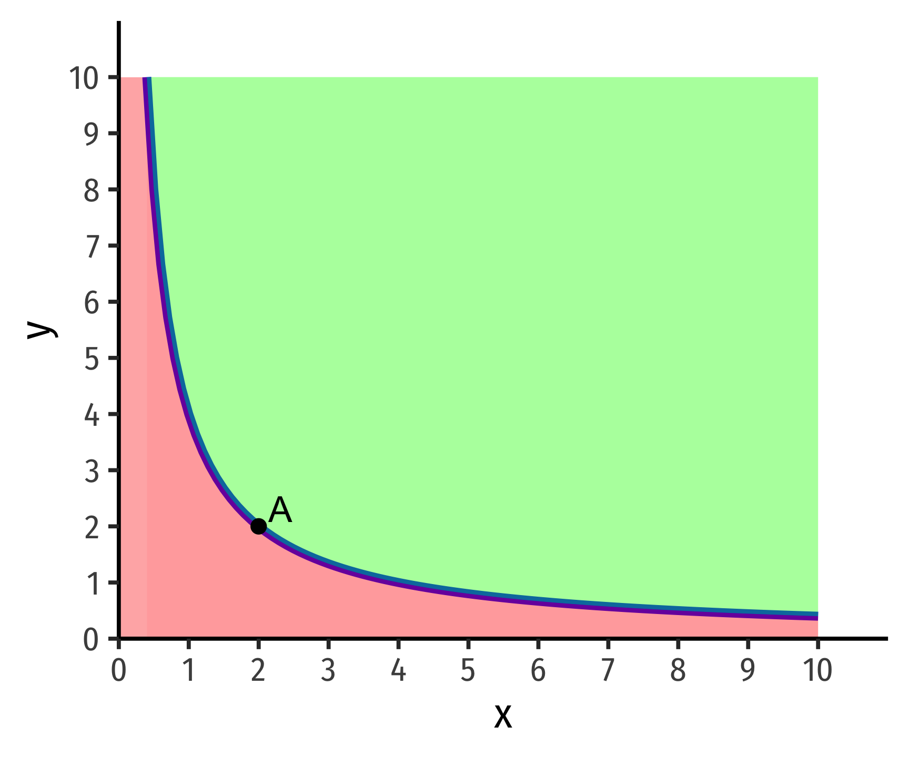
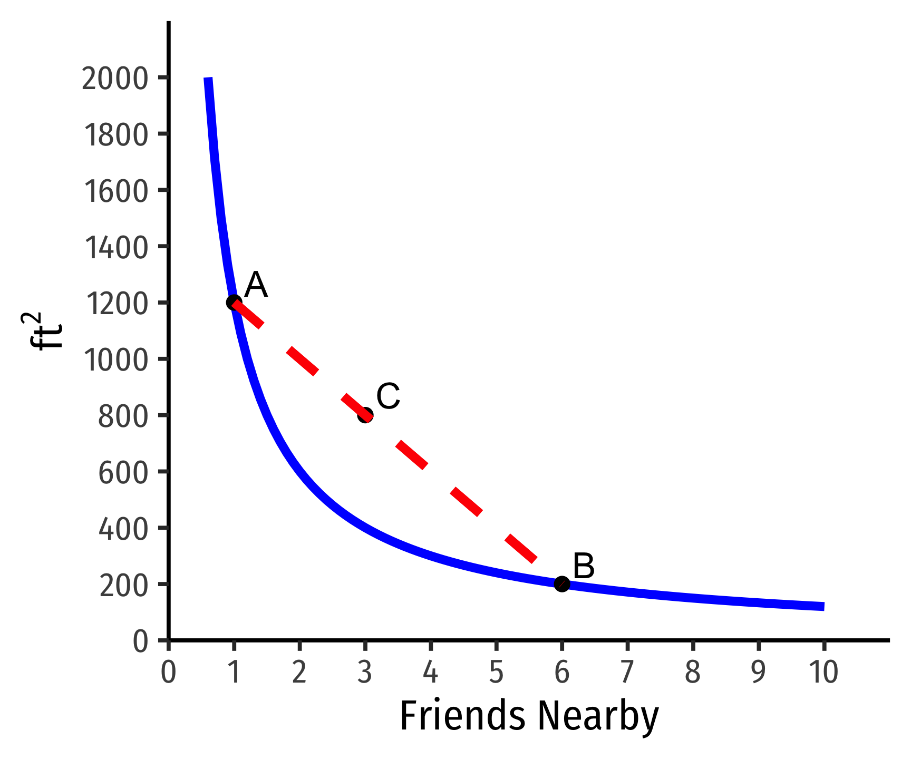
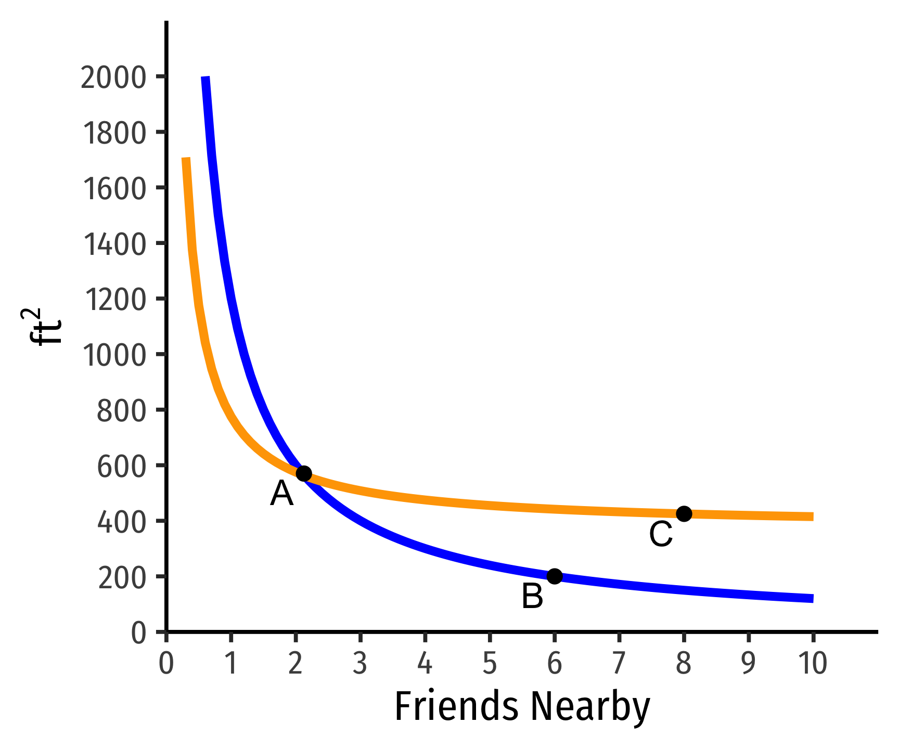
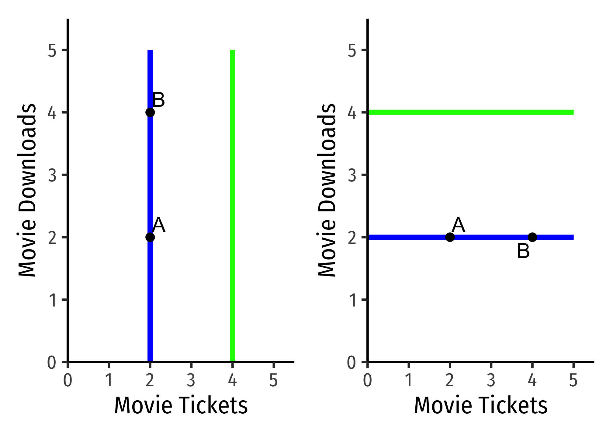
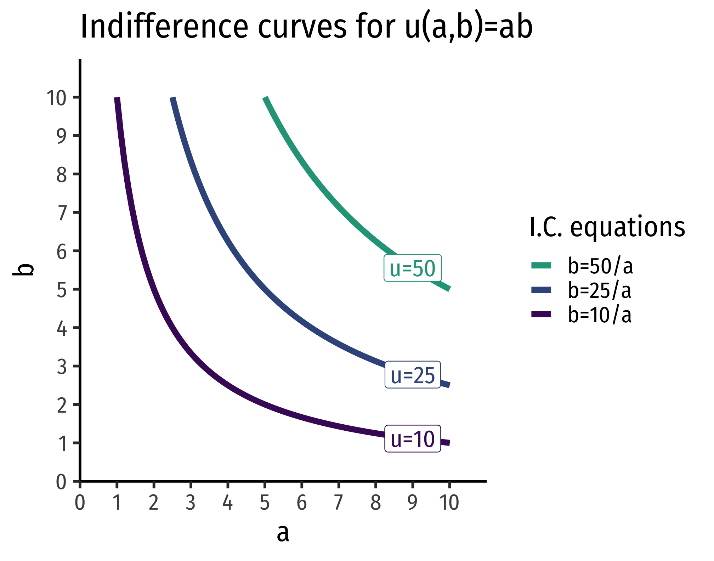

1.3 — Preferences — Appendix
Strict vs. Weak Preferences
We have defined preferences as being strictly one of the following possibilities:
- \(a \succ b\) (\(a\) is strictly preferred over b)
- \(a \prec b\) (\(b\) is strictly preferred over a)
- \(a \sim b\) (indifferent between a)
You can also have weak preferences, such as
- \(a \succeq b\) (\(a\) is at least as preferred as (or “weakly preferred over” \(b\))
- \(a \preceq b\) (\(b\) is at least as preferred as (or “weakly preferred over” \(a\))
These are more technically complete, but it is much more simple for us to focus on strong preferences, and we don’t lose much by doing so.
Assumptions of “Well-behaved Preferences”
Reflexivity : any bundle is at least as preferred as itself
Completeness : any two bundles can be compared
Transitivity : rankings are logically consistent:
- If \(a \succ b\) and \(b \succ c\), then \(a \succ c\)
Are these good assumptions? As you will find typical in economics, very often yes, sometimes no! See the growing field of Behavioral economics for interesting anomalies and exceptions to our assumptions.
Assumptions of “Well-behaved Indifference Curves”
Like preferences, we make 4 major assumptions about indifference curves to describe the normal case. In fact, many of these assumptions are derived from the assumptions we made above about well-behaved preferences
- We can always draw indifference curves: two bundles can always be ranked
Every possible bundle (point on graph) is on an indifference curve.

Of course, this means that this entire graph is full of indifference curves - every single possible point is on some indifference curve (and this whole graph would just be a solid block of black). Naturally, it’s pointless to draw all the indifference curves, we just want to show a few to make our analysis meaningful. But the general idea comes from assumption 2 of preferences: any two bundles can be compared, as we can compare two points on this graph and make a judgment.
- Indifference curves are monotonic, which means practically that “more is preferred to less”
For any bundle \(b\) with more of at least one good than bundle \(a \implies a \prec b\). Movements to the Northeast always preferable, while movements to the Southwest always unpreferable.

Here’s a challenge: what would indifference curves look like if one of the axes contained a bad, rather than a good? In this case, we would violate the assumption of monotonicity!
- Indifference curves are convex, which means in practice that “averages are preferred to extremes”
From experience, people generally prefer variety in their consumption. Rather than having one bundle that is “extreme” (a lot of one good and little or none of another), they tend to prefer a bundle with a better “mix” or “balance” of some of both goods.
Take our example from class, hunting for apartments. Apartment \(A\) is very large but near very few friends, whereas apartment \(B\) is very small but near many friends. If we could find some apartment, \(C\), that is a weighted average of the two, with a better mix of size and friends, it would be preferred, and thus, on a higher indifference curve than \(A\) or \(B\)!
Mathematically, this feature is because indifference curves are normally convex. A function is convex when a line connecting any two points on the function lies above the function itself. Check the math review guide for more information.

Here’s a challenge: what would non-convex (e.g. concave) curves look like, and what preferences would cause that situation?
- Indifference curves can never cross because we have assumed that preferences are transitive.
Suppose two curves crossed, as the ones below:
- On the blue indifference curve, \(A \sim B\)
- On the orange indifference curve \(B \sim C\)
- But clearly \(C \succ B\)
- Preferences are not transitive!

Steepness & Indifference Curves for Neutrals
The Steepness of indifference curves tells us how consumers trade off between goods.

Perfectly vertical curves (left) \(\implies\) indifference between having more (point B) or fewer (point A) downloads. There is no tradeoff a person would make to acquire more Downloads, they truly do not care about them at all. Thus, on the left graph, Downloads would be a neutral.
Perfectly horizontal curves (right) \(\implies\) indifference between having more (point B) or fewer (point A) Tickets. There is no tradeoff a person would make to acquire more Tickets, they truly do not care about them at all. Thus, on the right graph, Tickets would be a neutral.
We can look at less extreme cases:

On the left graph, the flatter curve implies the person is willing to give up only a few Downloads to obtain more Tickets (and vice versa). \(MRS_{T,D}\) (slope) is small, indicating downloads are more highly valued relative to tickets.
On the right graph, the steeper curve implies the person is willing to give up a lot Downloads to obtain more Tickets (and vice versa). \(MRS_{T,D}\) (slope) is large, indicating downloads are less valued relative to tickets.
Derivation of MRS Equation (as ratio of marginal utilities)
Consider a movement along an indifference curve, how would this change affect utility? There will be a change in \(x\) and a change in \(y\), and multiplying the marginal utility of each, and adding these together will give us our total change in utility. But we know that if we are on the same indifference curve, moving along the curve will not change utility (all points on the curve are defined as having the same utility!). So rearrange the equation as follows:
\[\begin{align*} MU_x \Delta x+MU_y\Delta y&= \Delta u && \text{Measuring change in utility} \\ MU_x \Delta x+MU_y \Delta y &=0 && \text{But change in utility is 0}\\ MU_y \Delta y&= -MU_{x} \Delta x && \text{Subtracting x terms}\\ \underbrace{\frac{\Delta y}{\Delta x}}_{MRS} &= -\frac{MU_{x}}{MU_{y}} && \text{Dividing to get like terms on each side}\\ \end{align*}\]
Notice rise over run, \(\frac{\Delta y}{\Delta x}\), is the slope, which we have defined as the marginal rate of substitution (MRS). \(\blacksquare\)
Utility Functions and PMTs
Two utility functions \(u(\cdot)\) and \(v(\cdot)\) represent the same preferences iff there is a strictly increasing function \(f\) such that \(v(\cdot)=f\left[u(\cdot)\right]\)
\[\begin{align*} a&=(1,2)\\ b&=(2,2)\\ c&=(4,3)\\ \end{align*}\]
The following utility functions express the same preferences:
| \(u(\cdot)\) | \(v(\cdot)\) |
|---|---|
| \(u(a)=1\) | \(v(a)=2\) |
| \(u(b)=2\) | \(v(b)=4\) |
| \(u(c)=3\) | \(v(c)=6\) |
\[v(\cdot)=2\left[u(\cdot)\right]\]
A positive monotonic transformation (PMT) transforms quantities such that the rank order of the quantities is preserved.
- Examples: \(v(u)=u+2; \, v(u)=4u; \, v(u)=u^3; \, v(u)=ln(u)\)
Any PMT of a utility function contains the same preferences!
Graphing Indifference Curves
I will not ask you to formally graph indifference curves (just roughly sketch them where appropriate). If you wanted to graph them, and express them in a graphable (slope-intercept form) equation, simply solve for the good on the vertical axis.
Example: Suppose we have a typical1 indifference curve for apples \((a)\) and bananas \((b)\): \[u(a,b)=ab\]
Each indifference curve (or contour) is one level of utility (all points on the curve give a specific level of utility). So, set that level of utility equal to some constant, \(k\).
\[ab=k\]
Then, if we are putting \(b\) on the vertical axis, we simply solve this for \(b\):
\[\begin{align*} ab&=k\\ b&=\frac{k}{a}\\ \end{align*}\]
This is the general equation for all indifference curves of this utility function: each utility level (value of \(k)\) can be graphed as an indifference curve with that equation. Thus, for example, for a utility level of \(10\), the equation for that indifference curve is \[b=\frac{10}{a}\].

Utility Functions for Perfect Substitutes
Perfect substitutes produce straight lines for indifference curves. A straight line has a constant slope, which is interpretted as the MRS being constant - you should always be willing to substitute between the two goods at the same rate. The utility function looks like:
\[u(x,y)=w_xx+w_yy\]
Where each \(w_i\) is a relative weight (intensity of relative preference). These are often known as linear preferences because the utility of the two goods are related by addition.
Notice, having some of one good and none of the other still provides positive utility (unlike utility functions where the quantities of goods are multiplied!). This is precisely because of the substitutability between the goods!
Example
Consider 1-Liter bottles of Coke \(L_{1}\) and 2-Liter bottles of Coke \(L_{2}\). You should always be willing to substitute between one 2-Liter bottle and two 1-Liter bottles.
\[u_{L_{1},L_{2}}=1L_{1}+2L_{2}\]
The relative weights here are 1 for 1-Liter bottles and 2 for 2-Liter bottles, because 2-Liter bottles are “worth” twice as much for you (it takes two 1-Liter bottles to match a 2-Liter bottle!).
\(MRS_{L_{1},L_{2}}=-\frac{w_x}{w_y} = -\frac{1}{2}\)

Utility Functions for Perfect Complements
Perfect complements produce right angles for indifference curves. This is technically not a mathematical function, since each \(X\) value must be mapped to a single \(Y\) value (i.e. no vertical lines). Thus, the utility function for perfect complements \(x\) and \(y\) is quite unique:
\[u(x,y)=min\{w_xx,w_yy\}\]
Where each \(w_i\) is a relative weight (intensity of relative preference). Utility is determined by the lesser value of what you have, \(x\) (weighted by \(w_x\)) or \(y\) (weighted by \(w_y\)). These are sometimes called “Leontief preferences”.
The marginal rate of substitution alternates between \(0\) (horizontal line) and \(\infty\) (vertical line).
Example
Consider consuming hot dogs \((H)\) and buns \((B)\), that must be consumed together as a package 1:1. The utility function would be: \[u(H,B)=min\{H,B\}\]
Having 2 hot dogs and 3 buns only yields a utility of 2. Having 3 hot dogs and 2 buns also only yields a utility of 2.

Cobb-Douglas Functions
Cobb-Douglas functions (both for utility and production) are one of the most common functional forms in economics. Despite their somewhat frightening presence on the surface, they have very neat mathematical properties, and have been empirically useful as well. A Cobb-Douglas function (for utility) looks like:
\[u(x, y)=x^a y^b\]
MRS and Positive Monotonic Transformations
The marginal rate of substitution, using the above equation is: \[\begin{align*} MRS_{x, y} &=\frac{MU_{x}}{MU_{y}} && \text{The definition of MRS}\\ &= \cfrac{\big(\frac{\partial }{\partial x}\big)}{\big(\frac{\partial}{\partial y}\big)} && \text{Using the definition of marginal utility as partial derivative}\\ &= \frac{a x^{a-1}y^b}{b x^a y^{b-1}} && \text{Differentiating }u \text{ w.r.t }x \text{ on top and }y \text{ on bottom}\\ &=\frac{a}{b} x^{(a-1)-a}y^{b-(b-1)} && \text{Using exponent rules for division}\\ &= \frac{a}{b} x^{-1}y^{1} && \text{Simplifying exponents}\\ &=\frac{a}{b} \frac{y}{x} && \text{Using exponent rules for negative exponents}\\ \end{align*}\]
Using logarithms, we can take a positive monotonic transformation of the original utility function \(u\):
\[v(x, y)=a \: ln \: x + b \: ln \: y\]
The MRS using the logarithmic form is:
\[\begin{align*} MRS_{x, y} &=\frac{MU_{x}}{MU_{y}} && \text{The definition of MRS}\\ &= \cfrac{\big(\frac{\partial }{\partial x}\big)}{\big(\frac{\partial}{\partial y}\big)} && \text{Using the definition of marginal utility as partial derivative}\\ &= \cfrac{\big(\frac{a}{x}\big)}{\big(\frac{b}{y}\big)} && \text{Differentiating }u \text{ w.r.t }x \text{ on top and }y \text{ on bottom}\\ &=\frac{a}{b} \frac{y}{x} && \text{Multiplying the righthand side by the reciprocal of the denominator,} \frac{y}{b}\\ \end{align*}\]
Which of course, is the same, because we know any positive monotonic transformation of a utility function preserves the same preferences!
EXAMPLE
Find the marginal rate of substitution for the utility function:
\[u(x, y) = \sqrt{x, y}\]
First, recognize that square roots are equivalent to saying \(x^{0.5} y^{0.5}\). The marginal rate of substitution would be:
\[\begin{align*} MRS_{x, y} &=\frac{MU_{x}}{MU_{y}} && \text{The definition of MRS}\\ &= \cfrac{\big(\frac{\partial }{\partial x}\big)}{\big(\frac{\partial}{\partial y}\big)} && \text{Using the definition of marginal utility as partial derivative}\\ &= \frac{0.5 x^{-0.5}y^{0.5}}{0.5x^{0.5}y^{-0.5}} && \text{Differentiating }u \text{ w.r.t }x \text{ on top and }y \text{ on bottom}\\ &=\frac{0.5}{0.5} x^{0.5-0.5}y^{0.5-(-0.5)} && \text{Using exponent rules for division}\\ &= x^{-1}y^{1} && \text{Simplifying exponents, and cancelling} \frac{0.5}{0.5}\\ &=\frac{y}{x} && \text{Using exponent rules for negative exponents}\\ \end{align*}\]
Note we could find this equivalently again by taking logs of the original utility function.
\[v(x,y)=0.5 \: ln \: x+0.5\: ln\: y\]
\[\begin{align*} MRS_{x, y} &=\frac{MU_{x}}{MU_{y}} && \text{The definition of MRS}\\ &= \cfrac{\big(\frac{\partial }{\partial x}\big)}{\big(\frac{\partial}{\partial y}\big)} && \text{Using the definition of marginal utility as partial derivative}\\ &= \cfrac{\big(\frac{0.5}{x}\big)}{\big(\frac{0.5}{y}\big)} && \text{Differentiating }u \text{ w.r.t }x \text{ on top and }y \text{ on bottom}\\ &=\frac{y}{x} && \text{Multiplying the righthand side by the reciprocal of the denominator,} \frac{y}{0.5}\\ \end{align*}\]
Which again, gives us the same marginal rate of substitution.
Footnotes
Cobb-Douglas!↩︎